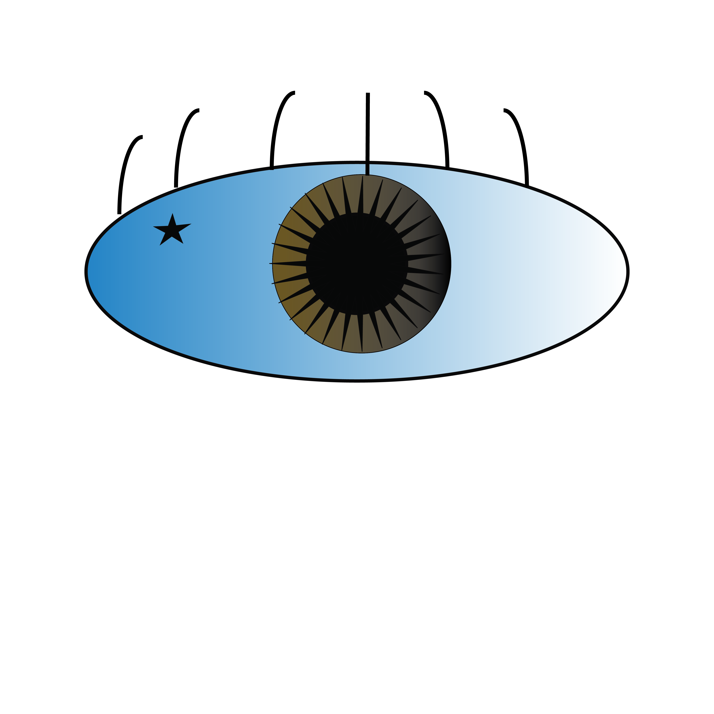

Expressive Eye

I focused on using simple shapes and clean lines to make the eye easy to read while still giving it personality. The blue gradient across the eye helps create a smooth, almost peaceful tone, while the dark pupil and sharp inner details draw attention to the center. The small star element adds a subtle abstract detail that makes the design feel less realistic and more expressive.